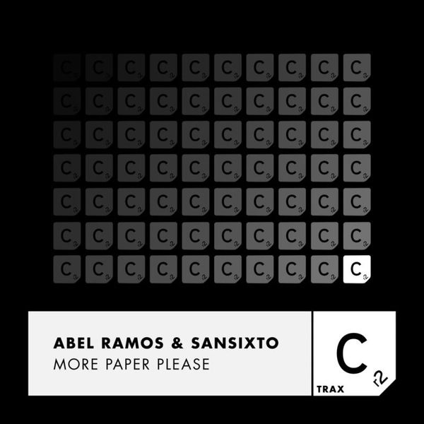

I 20 dischi
 1
EverybodyCORTI&LAMEDICA, ANDRY J
1
EverybodyCORTI&LAMEDICA, ANDRY J
 2
Running AwayAlex Nocera, Cirillo JR
2
Running AwayAlex Nocera, Cirillo JR
 3
Waking Up With You (Jamis Remix)Armin Van Buuren
3
Waking Up With You (Jamis Remix)Armin Van Buuren
 4
Coming HomeA-Trak & Ferreck Dawn
4
Coming HomeA-Trak & Ferreck Dawn
 5
Dont Fall in LoveCalippo
5
Dont Fall in LoveCalippo
 6
I Think That I Like YouTom Ferry & Kiesza
6
I Think That I Like YouTom Ferry & Kiesza
 7
Nights Like ThisLoud Luxury x CID
7
Nights Like ThisLoud Luxury x CID
 8
Blow Ya Mind (Dave Winnel Extended Remix)Lock 'N Load
8
Blow Ya Mind (Dave Winnel Extended Remix)Lock 'N Load
 9
To The TopFedde Le Grand & Marc Benjamin
9
To The TopFedde Le Grand & Marc Benjamin
 10
DrownMartin Garrix feat. Clinton Kane
10
DrownMartin Garrix feat. Clinton Kane
 11
So AliveJenaux Feat. Harlee
11
So AliveJenaux Feat. Harlee
 12
Feel Your TouchRetroVision
12
Feel Your TouchRetroVision
 13
La Dee DaRalov
13
La Dee DaRalov
 14
SuperstarDavid Puentez & Albert Neve
14
SuperstarDavid Puentez & Albert Neve
 15
Groove Is In The HeartThe Cube Guys, Bando
15
Groove Is In The HeartThe Cube Guys, Bando
 16
Mind BreakerAlbert Breaker
16
Mind BreakerAlbert Breaker
 17
MegablastChocolate Puma
17
MegablastChocolate Puma
 18
Rusty TromboneKryder
18
Rusty TromboneKryder

19 More Paper pleaseAbel Ramos
20
On Off Rockin Music (Federico Scavo Mashup)Cirez D vs Martin Solveig
La tracklist
- 1 Everybody CORTI&LAMEDICA, ANDRY J Bang Record
- 2 Running Away Alex Nocera, Cirillo JR Ensis Music
- 3 Waking Up With You (Jamis Remix) Armin Van Buuren Armada Music
- 4 Coming Home A-Trak & Ferreck Dawn Club Sweat
- 5 Dont Fall in Love Calippo Enormous Tunes
- 6 I Think That I Like You Tom Ferry & Kiesza Armada Music
- 7 Nights Like This Loud Luxury x CID Armada Music
- 8 Blow Ya Mind (Dave Winnel Extended Remix) Lock 'N Load Armada Music
- 9 To The Top Fedde Le Grand & Marc Benjamin Darklight Recordings
- 10 Drown Martin Garrix feat. Clinton Kane Epic Amsterdam
- 11 So Alive Jenaux Feat. Harlee Armada Music
- 12 Feel Your Touch RetroVision Time Machine
- 13 La Dee Da Ralov BRING THE KINGDOM
- 14 Superstar David Puentez & Albert Neve Intercord
- 15 Groove Is In The Heart The Cube Guys, Bando Cube Recordings
- 16 Mind Breaker Albert Breaker Doorn Records
- 17 Megablast Chocolate Puma Tonco Tone
- 18 Rusty Trombone Kryder Spinnin' Records
- 19 More Paper please Abel Ramos Cr2 Records
- 20 On Off Rockin Music (Federico Scavo Mashup) Cirez D vs Martin Solveig Mashup